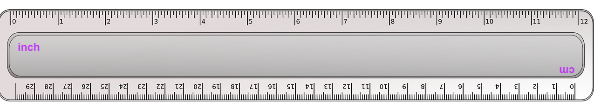

What You Should Know - Squishy Circuits: Design and Build a Light Fixture
 What Is Electricity
What Is Electricity
Electricity is a type of energy that builds in one place and can flow to another place. The electricity that builds in one place is called static electricity. You may have experienced this type of electricity when you walk across a carpet and then get a sharp shock when you touch a doorknob. When you walk across certain kinds of carpet your body builds up an electrical charge, and when you touch something metal, you give that built-up electricity a place to go. You feel a shock as the electricity flows towards the metal.
The electricity that flows from one place to another is called current electricity or electrical current. We use electrical current to power our appliances including dishwashers, telephones, and flashlights.

Closed Circuit
In order for an electrical current to flow, there must be a closed circuit. A closed circuit is a closed path or loop where electrical current can flow. If there is a break anywhere in the path or loop the electricity cannot flow and it is called an open circuit. An electrical path can accidentally be broken or you can use a switch to control the flow of electricity; therefore, an on-off switch is sometimes called a circuit breaker.

The circuit does not have to have wires. All you need for an electric circuit is a power source and conductive material making a path to and from a resistor. The Squishy Circuits kit can be built to work as a closed circuit. The positive and negative terminals for the battery are the red and black wires. They connect to the conductive dough which allows electricity to flow through the LED light, lighting it up.

Short Circuit
A short circuit occurs when the electrical current does not follow the correct path or circuit. In a normal circuit, there is a power source and wires connecting to a motor or light. The motor or light is called a resistor and when electricity flows through it, some of it is used up making the buzzer beep or the light glow. Without a resistor, the electricity takes a shortcut and builds up in the wires. This can become very dangerous. In a short circuit, wires can heat up enough to cause a fire or explosion. If you pushed the conductive dough balls to touch in the circuit, the electricity flowing through would skip the LED light and cause a short circuit because the resistor has been left out of the circuit. A short circuit could also happen if you touched the positive and negative battery terminals together.

Light Emitting Diodes
Light Emitting Diodes or LEDs are light bulbs that use less energy to work and give off less heat compared to traditional light bulbs, making them safer and more energy efficient. LEDs can be used anywhere a traditional light bulb is used. LEDs have a positive and negative probe and work when an electrical current is passed through them and excites the material inside. Be gentle when you move the probe. The metal is flexible but can easily break if bent too far.
When using the LED in a circuit as a resistor, the positive probe (longer) must be touching the positive (red) battery terminal and the negative (shorter) probe must be touching the negative (black) battery terminal. If your LED does not light up, try switching the placement of the probes or check for broken probes.

NOTE: If you run out of LEDs with usable probes, your facilitator can order more LEDs online or through Creative Learning Systems.
Conductors and Insulators
Materials such as copper metal wire conduct electricity or allow it to flow freely. Materials that allow electricity to flow freely through them are called conductors. Materials like rubber and plastic that do not allow electricity to flow through them easily are called insulators. Conductors and insulators help us control electricity.
Squishy Circuits does not use wrapped wires for conductors and insulators to help the current travel in the circuit. Instead, special dough is used. Inside the Squishy Circuits kit, there are two types of dough. The colored dough is conductive. It is made with salt which has ions and allows for the electrical current to travel easily. The white dough contains sugar instead of salt and does not have ions, so electricity does not travel easily through it. Clay can also be used as an insulator because the materials in clay do not have many ions making it difficult for electricity to travel through it.

What Is Area?
Area is the number of square units it takes to cover a shape with no gaps and overlaps.
The area of the rectangle below is 6 square units.

The length of this rectangle is 3 units. The width is 2 units. If you multiply the length by the width, you will find the area. 3 units × 2 units = 6 square units.

You can find the area of any rectangle by multiplying the length times the width. We can use a formula to help find the area. Notice the area is always written using square units.
Area = length × width
Area = 3 inches × 4 inches
Area = 12 square inches (inches2)

How Can I Measure a Rectangle with a Ruler?
A ruler is a tool for measuring length, width, or height. The units on the ruler are either centimeters or inches. Many rulers have both centimeter and inch units. Look at the ruler below. What units do you see?

To measure a rectangle with the ruler, follow the steps in the images below.


After the length and width are found, the area can be calculated.

Career Connection and Real-World Application
Electrician
An electrician is a highly skilled and trained professional who specializes in connecting, wiring, and fixing electrical devices. Every school, home, and building that is built will need the services of an electrician. An electrician is able to read and interpret plans to properly install electric wiring throughout a building. Electricians use math in many aspects of their job, including measuring and calculating the areas of building sections and rooms to determine the amount of wiring needed.

Electrical Engineers
Electrical engineers design, develop, test, and supervise the manufacturing of electrical equipment. Engineers use math in all phases of their job. Engineers must be highly accurate when making their calculations to ensure that the electrical equipment is safe and works as expected.
.png "electrical engineer")
Lighting designers need an understanding of electrical engineering in order to make working light fixtures and settings. There are lighting designers who design, install, and operate the lighting and special effects used for theater and other live performances. These lighting designers need to understand how to find area since at different times, they will need to light up different sections of the performance area. Since the light fixtures are only meant to light up the performance space, there is less attention given to the appearance of the light fixtures themselves and more attention on how the lights affect the performance environment.
There are also designers who design light fixtures that are meant to be the focus of attention, though often, these designers also design other decorative arts and architectural spaces. Because of this, they consider the entire environment when designing their lights. They think both about how the light fixture will cast light and shadow on a room, and whether it has an attractive appearance. A beautifully designed light fixture could be the center of attention in a room.